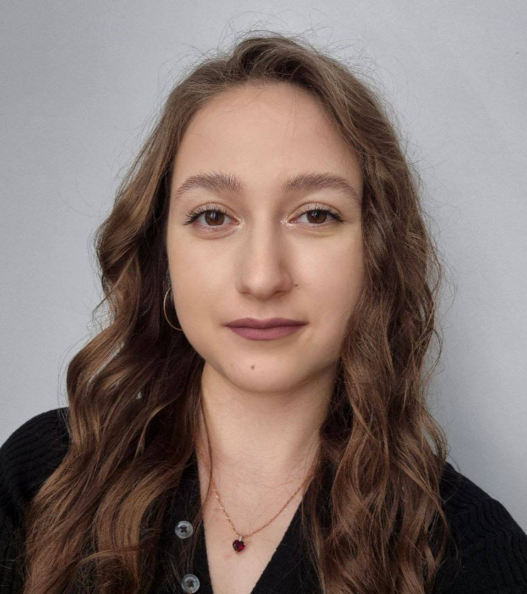
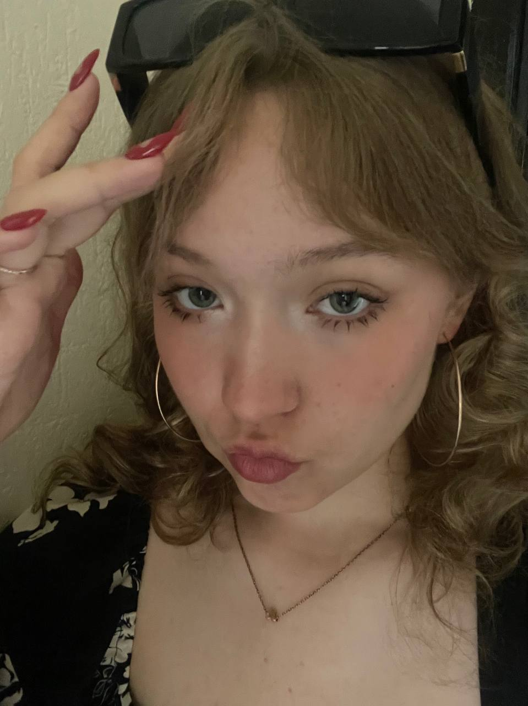
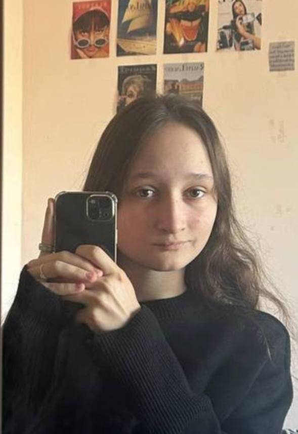

Андрианова Мария Ивановна
Вклад: Координация разработки сервиса, распределение задач и контроль прогресса.
Создание прототипа и тестирование моделей.

Ахметдинова Диана Румильевна
Вклад: Исследование нейросетей для генерации 3D-аватаров, разработка прототипа.
Тестирование технологий, настройка интерфейса сервиса и работы продукта.

Иноземцева Арина Дмитриевна
Вклад: Изучение нейросетевых методов для создания 3D-аватаров, разработка прототипа.
Настройка функционала сервиса и оптимизация его работы.